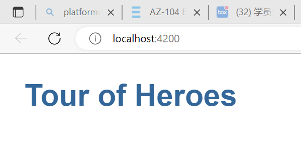

HTML 包括六个级别的标题， h1 (en-US)–h6 (en-US) ，一般最多用到 3-4 级标题。
这是一个段落

study hard !!!
这是一个有序列表
- 无序列表（Unordered List）中项目的顺序并不重要，就像购物列表。用一个 ul 元素包围。
- 有序列表（Ordered List）中项目的顺序很重要，就像烹调指南。用一个 ol 元素包围。
这是一个无序列表
- 属性包含了关于元素的一些额外信息，这些信息本身不应显现在内容中。
- 本例中，class 是属性名称，editor-note 是属性的值。
class 属性可为元素提供一个标识名称，
以便进一步为元素指定样式或进行其他操作时使用。
这是一个链接
css 语法：
- 每个规则集（除了选择器的部分）都应该包含在成对的大括号里（{}）。
- 在每个声明里要用冒号（:）将属性与属性值分隔开。
- 在每个规则集里要用分号（;）将各个声明分隔开。
- padding：即内边距，围绕着内容（比如段落）的空间。
- border：即边框，紧接着内边距的线。
- margin：即外边距，围绕元素外部的空间。
- width ：元素的宽度
- background-color ：元素内容和内边距底下的颜色
- color ：元素内容（通常是文本）的颜色
- text-shadow ：为元素内的文本设置阴影
- display ：设置元素的显示模式（暂略）